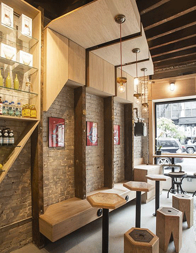

关于我们
About Us

公司简介
二十世纪三十年代，巴西咖啡豆生产过剩， 剩余的咖啡豆只能当燃料消耗，非常可惜。 当巴西政府向雀巢公司寻求咖啡豆过剩的解决方法的时候 ， 并没有意识到这最终成就了一个历久弥醇的伟大的咖啡品牌。 1930年，巴西咖啡连续经历了几次大丰收，短期内难以完全销售，便向雀巢求助，寻求令咖啡不失香醇的长 期保存方式。 咖啡权威——马克思•莫根特尔(Max Morgenthaler)立刻同他的研究队伍着手研究，试图制造一种既可以较好保存咖啡芳香又易溶于热水的"固体咖啡"。经过在雀巢瑞士实验室长达七年的不懈努力，30年代末，雀巢向市场推出速溶咖啡，“雀巢咖啡”品牌创立。
1988年，雀巢通过考察确定云南适宜种植咖啡，决定支持云南省的咖啡种植。随后于1992年在云南思茅地区成立咖啡农艺服务部，帮助当地发展咖啡种植业。 1997年， 雀巢公司在西双版纳创建试验示范农场，从零开始，让农民得到方方面面的实际培训，大大促进了当地小粒种咖啡豆的发展，并使一个产量低、质量次的咖啡豆产地发展成一个产量高、质量优且已引起全球咖啡界关注的咖啡豆产地。雀巢不仅让农民通过种植咖啡获得了稳定的收入,当地农民通过向雀巢了解国际现货市场价格甚至自己上网查询交易网站的价格，学会根据波动分析销售咖啡的时机。